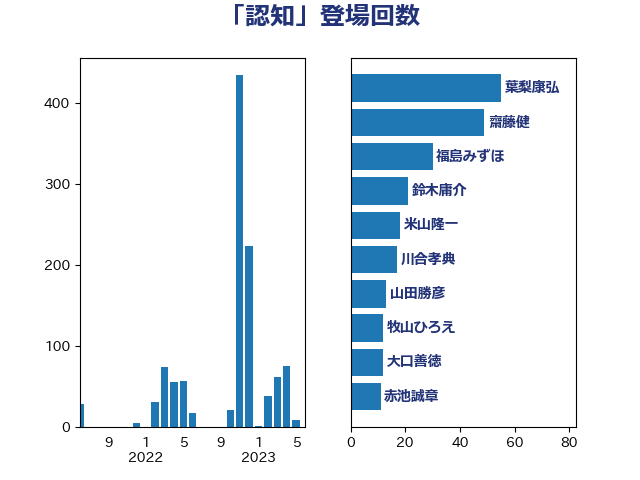

単語「認知」

| 葉梨康弘 | 自由民主党 | 55 回 |
| 齋藤健 | 自由民主党 | 49 回 |
| 福島みずほ | 社会民主党 | 30 回 |
| 鈴木庸介 | 立憲民主党 | 21 回 |
| 米山隆一 | 立憲民主党 | 18 回 |
| 川合孝典 | 国民民主党 | 17 回 |
| 山田勝彦 | 立憲民主党 | 13 回 |
| 牧山ひろえ | 立憲民主党 | 12 回 |
| 大口善徳 | 公明党 | 12 回 |
| 赤池誠章 | 自由民主党 | 11 回 |
| 本村伸子 | 日本共産党 | 11 回 |
| 寺田学 | 立憲民主党 | 11 回 |
| 仁比聡平 | 日本共産党 | 11 回 |
| 阿部弘樹 | 日本維新の会 | 10 回 |
| 谷川とむ | 自由民主党 | 10 回 |
| 末松信介 | 自由民主党 | 10 回 |
| 柳ヶ瀬裕文 | 日本維新の会 | 9 回 |
| 小野寺五典 | 自由民主党 | 9 回 |
| 石川大我 | 立憲民主党 | 8 回 |
| 梅村みずほ | 日本維新の会 | 8 回 |
| 中山展宏 | 自由民主党 | 7 回 |
| 西岡秀子 | 国民民主党 | 6 回 |
| 永岡桂子 | 自由民主党 | 6 回 |
| 日下正喜 | 公明党 | 6 回 |
| 加田裕之 | 自由民主党 | 6 回 |
| 伊藤孝恵 | 国民民主党 | 6 回 |
| 青柳仁士 | 日本維新の会 | 5 回 |
| 浜野喜史 | 国民民主党 | 5 回 |
| 浜田靖一 | 自由民主党 | 5 回 |
| 後藤茂之 | 自由民主党 | 5 回 |
| 堀場幸子 | 日本維新の会 | 5 回 |
| 國重徹 | 公明党 | 5 回 |
| 仁木博文 | 無所属 | 5 回 |
| 鎌田さゆり | 立憲民主党 | 4 回 |
| 鈴木義弘 | 国民民主党 | 4 回 |
| 藤原崇 | 自由民主党 | 4 回 |
| 礒崎哲史 | 国民民主党 | 4 回 |
| 漆間譲司 | 日本維新の会 | 4 回 |
| 浜田聡 | NHK党 | 4 回 |
| 柴田巧 | 日本維新の会 | 4 回 |
| 松本尚 | 自由民主党 | 4 回 |
| 杉久武 | 公明党 | 4 回 |
| 川田龍平 | 立憲民主党 | 4 回 |
| 岸田文雄 | 自由民主党 | 4 回 |
| 岬麻紀 | 日本維新の会 | 4 回 |
| 吉田宣弘 | 公明党 | 4 回 |
| 加藤勝信 | 自由民主党 | 4 回 |
| 馬場雄基 | 立憲民主党 | 3 回 |
| 野田聖子 | 自由民主党 | 3 回 |
| 野村哲郎 | 自由民主党 | 3 回 |
| 田村まみ | 国民民主党 | 3 回 |
| 沢田良 | 日本維新の会 | 3 回 |
| 林芳正 | 自由民主党 | 3 回 |
| 末次精一 | 立憲民主党 | 3 回 |
| 徳永エリ | 立憲民主党 | 3 回 |
| 平沼正二郎 | 自由民主党 | 3 回 |
| 平木大作 | 公明党 | 3 回 |
| 小山展弘 | 立憲民主党 | 3 回 |
| 小宮山泰子 | 立憲民主党 | 3 回 |
| 宮崎政久 | 自由民主党 | 3 回 |
| 安江伸夫 | 公明党 | 3 回 |
| 古川禎久 | 自由民主党 | 3 回 |
| 三浦信祐 | 公明党 | 3 回 |
| 阿部司 | 日本維新の会 | 2 回 |
| 長友慎治 | 国民民主党 | 2 回 |
| 鈴木俊一 | 自由民主党 | 2 回 |
| 金村龍那 | 日本維新の会 | 2 回 |
| 金子俊平 | 自由民主党 | 2 回 |
| 野田佳彦 | 立憲民主党 | 2 回 |
| 萩生田光一 | 自由民主党 | 2 回 |
| 荒井優 | 立憲民主党 | 2 回 |
| 芳賀道也 | 国民民主党 | 2 回 |
| 稲津久 | 公明党 | 2 回 |
| 秋本真利 | 自由民主党 | 2 回 |
| 福島伸享 | 無所属 | 2 回 |
| 石垣のりこ | 立憲民主党 | 2 回 |
| 田名部匡代 | 立憲民主党 | 2 回 |
| 田中健 | 国民民主党 | 2 回 |
| 清水真人 | 自由民主党 | 2 回 |
| 池畑浩太朗 | 日本維新の会 | 2 回 |
| 有村治子 | 自由民主党 | 2 回 |
| 斉藤鉄夫 | 公明党 | 2 回 |
| 岩谷良平 | 日本維新の会 | 2 回 |
| 岡田直樹 | 自由民主党 | 2 回 |
| 山崎正恭 | 公明党 | 2 回 |
| 山下貴司 | 自由民主党 | 2 回 |
| 小野泰輔 | 日本維新の会 | 2 回 |
| 塩崎彰久 | 自由民主党 | 2 回 |
| 吉田統彦 | 立憲民主党 | 2 回 |
| 吉田久美子 | 公明党 | 2 回 |
| 北神圭朗 | 無所属 | 2 回 |
| 佐々木さやか | 公明党 | 2 回 |
| 中谷一馬 | 立憲民主党 | 2 回 |
| 上野通子 | 自由民主党 | 2 回 |
| 高良鉄美 | 無所属 | 1 回 |
| 青山大人 | 立憲民主党 | 1 回 |
| 階猛 | 立憲民主党 | 1 回 |
| 遠藤良太 | 日本維新の会 | 1 回 |
| 赤羽一嘉 | 公明党 | 1 回 |
| 赤木正幸 | 日本維新の会 | 1 回 |
| 谷合正明 | 公明党 | 1 回 |
| 西銘恒三郎 | 自由民主党 | 1 回 |
| 西野太亮 | 自由民主党 | 1 回 |
| 藤巻健太 | 日本維新の会 | 1 回 |
| 自見はなこ | 自由民主党 | 1 回 |
| 美延映夫 | 日本維新の会 | 1 回 |
| 緑川貴士 | 立憲民主党 | 1 回 |
| 窪田哲也 | 公明党 | 1 回 |
| 福田昭夫 | 立憲民主党 | 1 回 |
| 石井章 | 日本維新の会 | 1 回 |
| 石井正弘 | 自由民主党 | 1 回 |
| 田所嘉徳 | 自由民主党 | 1 回 |
| 田中昌史 | 自由民主党 | 1 回 |
| 玉木雄一郎 | 国民民主党 | 1 回 |
| 牧原秀樹 | 自由民主党 | 1 回 |
| 浅野哲 | 国民民主党 | 1 回 |
| 泉健太 | 立憲民主党 | 1 回 |
| 河野義博 | 公明党 | 1 回 |
| 河野太郎 | 自由民主党 | 1 回 |
| 池田佳隆 | 自由民主党 | 1 回 |
| 櫻井周 | 立憲民主党 | 1 回 |
| 横山信一 | 公明党 | 1 回 |
| 榛葉賀津也 | 国民民主党 | 1 回 |
| 松本剛明 | 自由民主党 | 1 回 |
| 本庄知史 | 立憲民主党 | 1 回 |
| 木村英子 | れいわ新選組 | 1 回 |
| 木村次郎 | 自由民主党 | 1 回 |
| 朝日健太郎 | 自由民主党 | 1 回 |
| 早坂敦 | 日本維新の会 | 1 回 |
| 新妻秀規 | 公明党 | 1 回 |
| 斎藤アレックス | 国民民主党 | 1 回 |
| 掘井健智 | 日本維新の会 | 1 回 |
| 庄子賢一 | 公明党 | 1 回 |
| 平林晃 | 公明党 | 1 回 |
| 市村浩一郎 | 日本維新の会 | 1 回 |
| 岸真紀子 | 立憲民主党 | 1 回 |
| 岡本あき子 | 立憲民主党 | 1 回 |
| 山本剛正 | 日本維新の会 | 1 回 |
| 山口壯 | 自由民主党 | 1 回 |
| 小西洋之 | 立憲民主党 | 1 回 |
| 小川淳也 | 立憲民主党 | 1 回 |
| 小倉將信 | 自由民主党 | 1 回 |
| 寺田静 | 無所属 | 1 回 |
| 宮口治子 | 立憲民主党 | 1 回 |
| 大塚拓 | 自由民主党 | 1 回 |
| 和田政宗 | 自由民主党 | 1 回 |
| 古賀之士 | 立憲民主党 | 1 回 |
| 古川元久 | 国民民主党 | 1 回 |
| 佐藤英道 | 公明党 | 1 回 |
| 伊波洋一 | 無所属 | 1 回 |
| 伊東信久 | 日本維新の会 | 1 回 |
| 伊佐進一 | 公明党 | 1 回 |
| 井野俊郎 | 自由民主党 | 1 回 |
| 下野六太 | 公明党 | 1 回 |
| 三浦靖 | 自由民主党 | 1 回 |